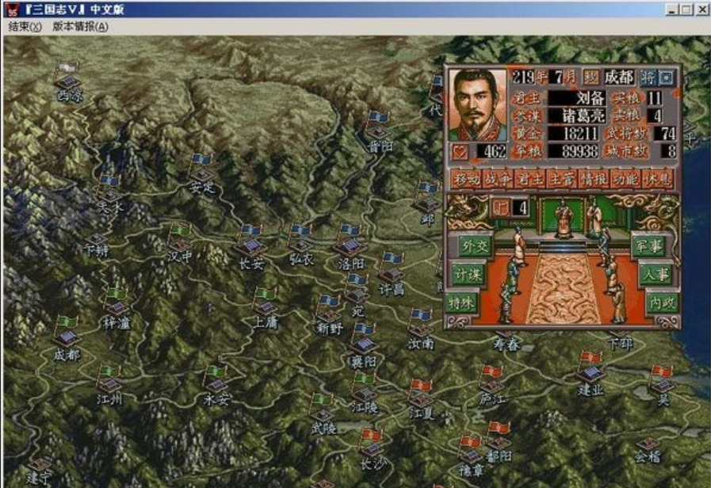
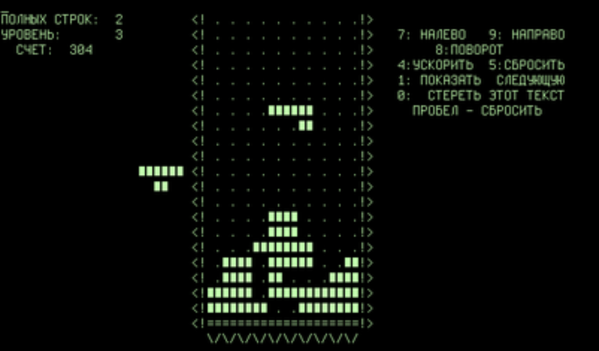

梦开始的地方¶
项目引入¶
战略游戏¶
如果你喜欢玩老游戏或者小时候有游戏机，那么你很可能玩过光荣出品的《三国志》系列游戏。在游戏中，你需要在若干回合内聚敛资源，组建军队，招募人才并最终设法统一天下。

游戏中，如果发生战斗，玩家需要在一个方格图上经历若干回合，控制己方单位通过移动、攻击等手段获得战斗的胜利。
我们把这种游戏称作战略游戏，在这个项目中，我们的目的就是实现一个战略游戏。
战略游戏包含大量复杂的规则、元素，以及接近实际的环境，在强化学习、决策算法设计等领域是一个重要的研究对象（比如《星际争霸2》）。
你可能会问：用终端界面也可以实现这类游戏吗？这就不得不让我们开启另一条叙事线了。
终端 ASCII 游戏¶
你一定玩过《俄罗斯方块》。但是你见过《俄罗斯方块》的最初版本么？第一版《俄罗斯方块》就是一个在终端上运行的游戏。

这种在终端上运行，用 ASCII 字符绘制界面的游戏或许不是最早的一批游戏，但在 GUI 编程和游戏引擎尚不发达的时代，利用终端写个小游戏是程序员在闲暇时的一项方便娱乐。《俄罗斯方块》就是一个俄罗斯程序员在业余时间创作的。
在那个计算机的草莽时代，还产生了不少类似的游戏。而战略游戏自然不会缺席，一个典型的例子是 《Curse of War》，你可以将它下载下来游玩，体验一下「用终端玩战略游戏」。

ANSI 转义序列¶
你可能很好奇，为什么图片中显示的这些终端和你日常使用的不一样：它们不像常见命令行交互环境一样只允许往缓冲区的末尾输出，并可以输出彩色的字符，能够不回显地响应键盘事件，有的甚至可以响应鼠标事件！
这一切功能都要归功于 ANSI 转义序列。它是在上世纪七十年代为统一各种视频终端（Video Terminal, VT）的转义功能推出的一个转义序列标准。程序员可以通过 VT 序列和用户进行类似 GUI 的交互，如自由移动光标绘图，获取鼠标事件等。
终端转义序列
VT 的最基本功能是接受字节流（通常是一些 ASCII 字符）并将它们显示出来，但是制造商为了实现移动光标，彩色输出等功能，还需要让 VT 具有在字节流中识别出指令的能力。
为了在字符输出流中向 VT 指示指令，我们定义一些特殊的字符作为转义字符（Escape Character），VT 会赋予转义字符及其后一定格式的一些字符特殊含义，从这个序列中读取出指令，从而实现比单纯打印字符更多的功能。
同时，VT 还可以通过终端转义序列向程序传递用户输入或响应程序的查询命令。如执行 echo -e "\e[6n"，终端就会将 \e[<row>;<col>R 放在输入流上。
VT 设备已经随着计算机技术的发展退出了历史舞台。但是我们现在所使用的许多软件终端（或者我们可以将它们称作「终端仿真器」）也继承了这些特性，如 xterm，又如 Windows 终端。
为了更方便地封装转义序列的功能，并加强利用转义序列的程序的跨平台性，人们编写了 TUI 库，如 curses 以及其开源继承者 ncurses。我们熟知的 Vim 就是利用 ncurses 编写的。
在本项目中，我们并不使用 ncurses 库等 TUI 库，而是直接在 ANSI 转义序列的基础上进行编程，你可以查看这个文档获取有关于 ANSI 转义序列的更多信息。
框架获取¶
本项目要求使用 git 进行代码版本管理，框架代码已经被托管到 github 上了，在你的 MSYS2 环境中运行如下命令获取框架代码：
git clone https://github.com/PS2023-programming/project-1.git
什么 MSYS2 环境？
也许你需要仔细阅读一下快速上手指南，如果你没有丰富的经验，你必须在完成它的指示之后才能继续进行项目。
什么是 git 和 github？
Git 是一个代码版本控制工具，要学习 git 的使用，你可以阅读 PA 的指南。
Github 是一个提供 Git 仓库托管的外网平台，要想入门 Github 的使用，可以参考 Github 的官方入门文档。
运行项目¶
在获取框架代码之后，你可以阅读框架代码提供的 readme.md 来确认自己的环境是否满足项目的需求。
在此之后，进入框架代码目录执行 make compile 编译框架代码，然后通过 make shell 进入游戏启动器的交互界面。
在启动器中输入 game 来启动游戏。由于项目还实现不完全，你启动的游戏将会闪退。
在游戏闪退以后，在启动器中执行 log 命令，你会看到如下日志：
......
Debug [/home/litrehinn/project-1-dev/minitui/source/minitui/event.cpp:116 tui_exec] start game mainloop
Error [/home/litrehinn/project-1-dev/minitui/source/minitui/event.cpp:120 tui_exec] No top widget
这样你就完成了框架代码的获取和运行。